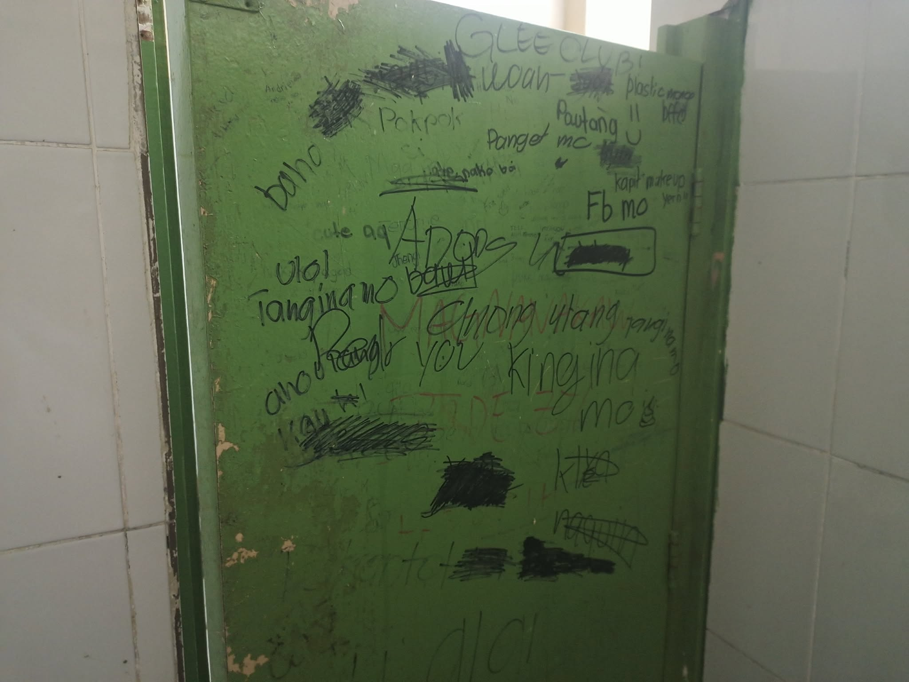

BULLYING, ISANG PROBLEMANG HINDI DAPAT BINABALEWALA
Nobyembre 7, 2026

HOLY SPIRIT NATIONAL HIGH SCHOOL, Quezon City – Ang bullying ay isa sa mga problemang hindi dapat balewalain, lalo na sa loob ng paaralan. Para sa ilan, maaaring simpleng biro lamang ang pang-aasar o pang-iinsulto, ngunit hindi natin alam kung gaano kalaki ang epekto nito sa damdamin ng taong nakararanas nito.
Ang paulit-ulit na pang-aapi ay maaaring magdulot ng takot, pagkawala ng tiwala sa sarili, at problema sa mental na kalusugan ng isang tao. Kaya mahalagang matutunan nating rumespeto at maging mabait sa ating kapwa dahil hindi natin alam kung ano ang kanilang pinagdaraanan.
Kung may makita tayong nambu-bully, huwag tayong makisali o tumawa sa kanilang ginagawa. Sa halip, maaari natin silang pagsabihan nang maayos at ipaalam sa guro, magulang, o kinauukulan ang nangyayari. Posible ring may sarili silang problema, ngunit hindi ito dahilan upang manakit ng iba.
Tandaan, ang bawat isa ay may karapatang pumasok sa paaralan nang walang takot na pagtawanan o apihin.
← Bumalik sa Metro